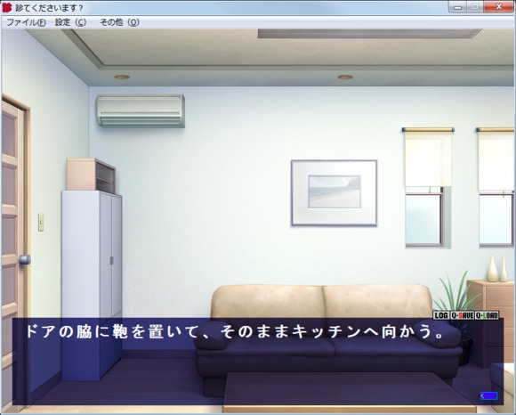
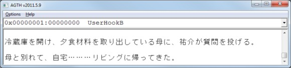

【教材】 用Cheat Engine查找特殊码（简易版）
关于用OllyDbg查找特殊码
【教材】用OllyDbg找出Agth提取GAL文本的特殊码（详细新人版）
http://867258173.diandian.com/post/2014-02-12/40060970396
【分享】VNR翻译日语游戏汉化简易图解教材
http://tieba.baidu.com/p/3702015596
【单独版】Cheat Engine 6.3
下载地址：http://www.400gb.com/file/67081497
【Cheat Engine修改器下载6.3 中文绿色版】CE_xiugaiq
下载地址：http://www.400gb.com/file/67081172
【Cheat Engine 6.2 汉化绿色版】CheatEngine62
下载地址：http://www.400gb.com/file/67081172
【AGTH最新版2011.5.9】agt
下载地址：http://www.400gb.com/file/67081173
注：Cheat Engine修改器是国外软件，对中文路径支持不好，需要把整个文件夹放在英文路径下，目录不能带有中文的。否则软件会变成英文。
先运行Cheat Engine以及游戏。用进程列表对话框（ File – Open Process – Open）将Cheat Engine附加到游戏。从一开始跳过序言并且开始游戏，然后立即保存游戏。现在立即开始下一个文本。游戏窗口像这样：

图1的文本是 “ドアの脇に鞄を置いて、そのままキッチンへ向かう。”.
在value type选择 “String” 并且点击 “First scan”。 Cheat Engine找到两个地址。
图2
双击两个地址将它们加到地址列表。现在点击游戏窗口。当文本改变后，地址4422F8也跟着改变。这个地址就是游戏写的新文本。你可以删除其他地址，我们现在不需要。
在地址列表右键地址4422F8并选择 “Find out what accesses this address”。Cheat Engine会设置一个breakpoint在这个地址并寻找用来访问这个地址的全部指令（操作码）。新的窗口会打开。在游戏窗口点击一次然后命令列表将出现在新的窗口。
图3
窗口表示用来访问地址4422F8的全部汇编指令。点击“Stop” 按钮就会停止寻找新的汇编指令。现在我们检查哪一个是正确的汇编指令。

图4
我们开始在汇编指令“0040FAAD - C6 00 00 - mov byte ptr [eax],00”。选择并点击“Show in disassembler”。我们设置一个breakpoint在40FAAD的汇编指令上。按F5键设置一个breakpoint。现在在游戏窗口点击一下，Cheat Engine's debugger将停止在40FAAD。
指令“mov byte ptr [eax],00”复制值“00”到寄存器EAX储存的地址。当debugger停止在40FAAD，寄存器EAX包含地址4422FA.。鼠标右键点击EAX并且选择"Show in hexview"。当你看到在地址列表中的在字符串开始在4422F8但是EAX指向的地址4422FA是开头字符串的2个字节后。现在按下F9并且debugger 又将停止。你会看到EAX增加了2个字节到4422FC并且两个自己在4422FA和4422FB改变了他们的值。按F9键反复观察EAX和hexview。在用F5键移除breakpoint。
每一次游戏会到达这个指令2个新字节写到[EAX-2] (从EAX的地址减去2个地址)。这两种字节构成一个字符在Shift-JIS (SJIS)字符页 (编码)。第一个字节的双字节SJIS字符总是大于0x80。SJIS通常包含单字节字符。单字节的值总是小于0x80。
现在我们设置AGTH的一个钩子在这个地址。
我们用“/H”开始并加上“BN”（“N”关闭上下文。上下文将在后面解释。 ）因为游戏总是写一个SJIS编码的字符，然后我们得到“/HBN”。
现在我们加上“-4”因为字符地址是在EAX然后我们得到“/HBN-4”。
EAX中并不直接包含的字符，而它包含的字符的地址，所以我们需要增加“*”来得到 “/HBN-4*”.
字符实际上不在EAX的地址但在[EAX-2]。我们得到“/HBN-4*-2”.
最后我们增加一个地址是在找到的改指令的地址然后我们得到“/HBN-4*-2@40FAAD”.
我们找到了特殊码“/HBN-4*-2@40FAAD”.
现在我们尝试设置breakpoint在40FAA0。你会看到指令“mov [eax],cl”写一个SJIS字符的第二个字节的地址在EAX (CL代表ECX的最低字节)。一些SJIS字符包含两个字节。当游戏达到40FAA0只有第一个字节的一个字符在[EAX-1]。按下F8键来遍历当前指令。第二个字节写到[EAX]。我们可以设置钩子在40FAA2。我们想要读哪一个开始在[EAX-1]的字节。因此特殊码是“/HBN-4*-1@40FAA2”.
最后让我们设置breakpoint在40FA8D。当游戏达到这个地址后你会看见[EAX]是00。指令“mov [eax],dl”写第一个字节的SJIS字符到[EAX] (DL代表最低位字节的EDX)。我们不能做任何事情这只是第一个字节，所以我们不能在这个地址创建特殊码。
如果你尝试其他在指令列表上的指令，你会看到全部都有同样的问题。当游戏到底一个指令的文本在4422F8仍然是旧的文本，而不是将要显示的文本。这这意味着，这些指令可以被用来创建一个钩子。
在本教程中，我们使用指令访问是不断变化的每一次点击的文字。另外，也可以使用从游戏数据库中访问文本的指令。
访问文本数据库的的指令
图5
读取存储的游戏。查找字符串 “ドアの脇に鞄を置いて、そのままキッチンへ向かう。” CE将找到。将它加到地址列表并将它命名为“database”.
图6
右键地址“database”并且选择“Find out what accesses this address”。现在点击游戏窗口然后下面的窗口会出现。
图7
我们看到“0040FA58 - 8A 10 - mov dl,[eax]”在debugger (disassembler)。设置一个breakpoint在40FA58用F5并且点击游戏窗口。别忘记在操作码窗口点击“Stop”按钮。屏幕表示窗口在我点击“Stop”之后。右键EAX选择“Show in hexview”。
图8
现在按下F9键反复观察EAX的变化。hexview没有变化是因为它它显示了文本数据库。你会看见EAX每次减去2而且它经常指向开始的SJIS字符。第一个字节经常是81, 82, 83 or 91.
让放置我们的钩子在这里。我们想读SJIS的字节“B”，地址在40FA58。字符在[EAX] (地址包含在EAX) 因此我们需要“*0”。特殊码就是“/HBN-4*0@40FA58”。让我们忽略的“N”现在只是关闭上下文。
上下文和子上下文
图9 特殊码为 /HBN-4*0@40FA58的提取文字
上下文是在堆栈的顶部的值。在图8， 在堆栈顶部的值是 (dword)00000001(1)。这是数字1。AGTH使用上下文来创建多个线程对一个钩。
在0X00000001以上的屏幕截图是上下文的线程。AGTH显示上下文为0X00000001，当它关闭。AGTH为每个上下文创建一个线程，除非你关闭的情况下，通过添加“N”的钩。这是我们所做的事情，因为我们根本就没有需要创建多个线程。我们没有拆分我们的线程在多线程。
第二个数字00000000在“：”后在线程的标题是子上下文。我们没有指定任何在我们的钩子子上下文，因此AGTH显示为00000000。子上下文是寄存器值或一个线程是用来分割成多个线程的堆栈值。尽管内容总是堆栈顶部的值，可以自由定义子上下文，允许有很大的灵活性。
图10 在一个线程中的旧的和新的文本。
它甚至可以一起使用上下文和子上下文。 AGTH将创建一个线程没对上下文和子上下文。例如，如果3个不同上下文和5个不同的子上下文，AGTH将创建15个不同的线程。
让我们看线程在AGTH自动创建的。 显示文本“ドアの脇に鞄を置いて、そのままキッチンへ向かう。”但有以前的文本。我们能不能在不同的线程中使用子上下文拆分两种文本？让我们试试吧。
0040DF02的线程上下文中的地址自动AGTH钩子。在调试器中按下Ctrl+ G去0040DF02。在40DEFC，我们看到呼叫的功能TextOutA。让我们在这个地址设置一个断点。按F5键设置一个断点。
图11
我们看到，EDI包含我们的文字。右键单击“EDI选择”Show in hexview“。重复按下F9键，你会看到TextOutA的每个字符被改变一次。 每次EDI增加2，EAX的也是这样的变化。您还将看到EDI访问第一旧文本，然后它开始进入新的文本。当这种情况发生的所有寄存器改变它们的值。我们的目标是找到一个寄存器，这将是我们的子环境，将创建两个线程，一个用于旧文本，新文本。
按F9键，直到开始出现新的文本。写下所有的EAX和EDI寄存器值，除了因为他们改变每次调用TextOutA。 EIP也应该被忽略。
表1：新文本
现在删除断点F5然后按F9键。再次设置断点，按F9键多次，直到比赛开始显示新的文本。
创建一个寄存器值的表
表2：再次新的文本
比较表。 ESI是不同的，所以我们必须从候选名单中删除ESI。现在，创建第三个表寄存器的值时，旧的文本显示。
表3：旧的文本
表4：完整的表寄存器。 ESP将是我们的子上下文。
EBX，ECX，EDX和EBP是相同的表中的旧的和新的文本。从候选名单中删除他们。这只能留给我们的ESP。让我们把ESP的子上下文。 EDI，它指向一个SJIS字符是-20，ESP为-14。
特殊码 “/HBN-20*0:-14@40DEFC” 就是我们需要的。
“-14”在挂钩意味着，ESP是子上下文。现在AGTH显示两个线程。一个是0X00000001：0018F5D0，另一种是0X00000001：0018EEB0名。请注意，在子上下文ESP寄存器的值。上下文是0X00000001，因为我们已经把他们与“N”钩。
但也可以使用从堆栈中的值作为子上下文。我建议是使用OllyDbg。 OllyDbg的允许堆栈复制到剪贴板，然后粘贴在电子表格中。电子表格，使得它更容易看到哪些值保持不变，从而改变。